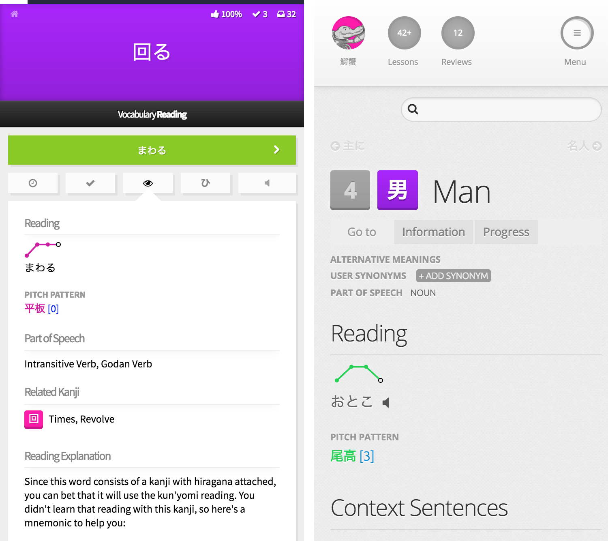
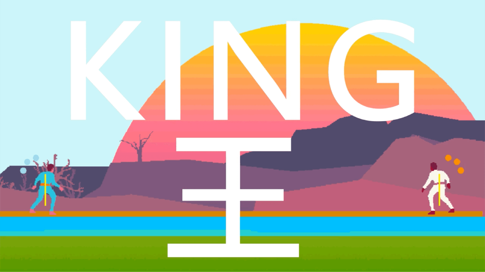
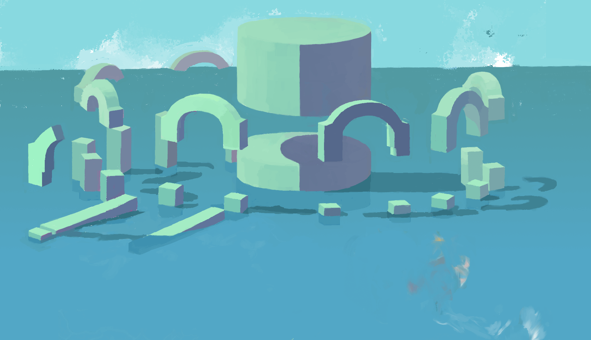
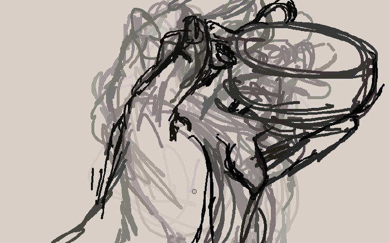
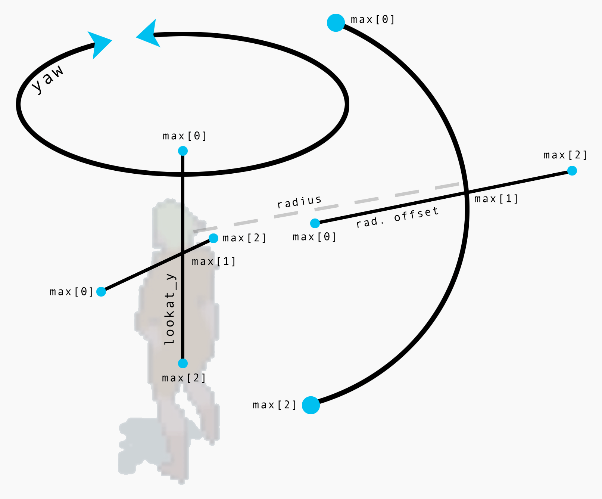
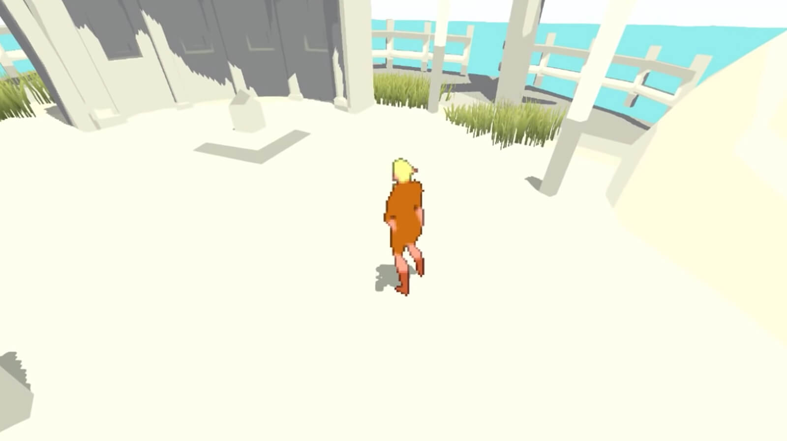
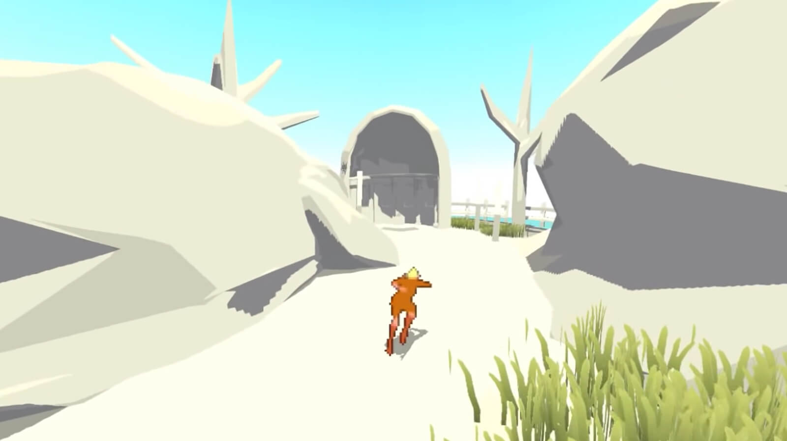

web developer,
programmer,
and artist.
My professional work is in JavaScript, PHP and HTML/CSS, which you won't find here.
I first started programming in C++. I spend a great deal of time experimenting
regardless of language or environment, from
TidalCycles
to Piet.
Below is documentation of the more practical and/or presentable projects I've worked on.
wanikani pitch info
WaniKani Pitch Info is an open-source userscript for WaniKani, a web application for learning Japanese kanji and vocabulary. With over 6000 words and audio for each, WaniKani is a great learning tool.
One of the problems learning Japanese is learning the pitch accent of every word, and it can be very difficult based on audio alone. This userscript adds visual representations of the pitch to WaniKani. Colors correspond to heiban, odaka, nakadaka, and atamadaka patterns for quick comprehension.
Github: github.com/Invertex/WaniKani-Pitch-Info
Userscript: greasyfork.org/en/scripts/31070-wanikani-pitch-info

king
Players compete to control the center of gravity in a judo inspired multiplayer fighting game. Each player has a balance meter and energy. Players can push, pull, throw, and move at the cost of energy. The winner scores by leveraging their energy, position, and timing to throw or trip their opponent.
ENERGY
BALANCE
THROW
King was created while I was living in Chicago, surrounded by lots of exciting local indie developers making and playing their own games. I was interested in games as a non-violent competition in response to popular media. One day I hope to revisit King and release it. You can click the image to check out the gameplay prototype or .


evaporate
Evaporate is a drawing program without an eraser, but your marks disappear over time. I created this at a time when I was having trouble drawing out concepts, and I wanted to rediscover the joy and freedom of sketching.
The current state of the program features a color picker, brush size, and lifespan for lines. It can save the image to a file. The one rule is you can not erase.
Github: github.com/blaketrahan/evaporate

gentle-follow-cam.cpp
This project is actually part of a much larger and older work. I was working on a developing an entire game by myself. Needless to say that was a ton of work and I never finished it, but I learned a lot about programming and developing in the process.

Gentle-follow-cam.cpp is a piece of code that came out of it. It's the code for the camera that follows the player. It is designed to gently swivel on the X and Y axis like human eyes, while naturally zooming and panning over the shoulder.
Github: github.com/blaketrahan/b_libs

